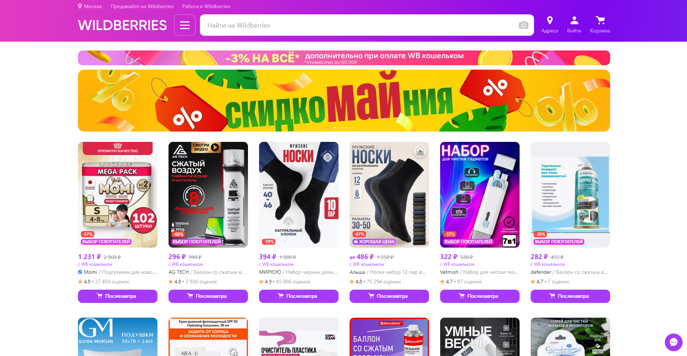
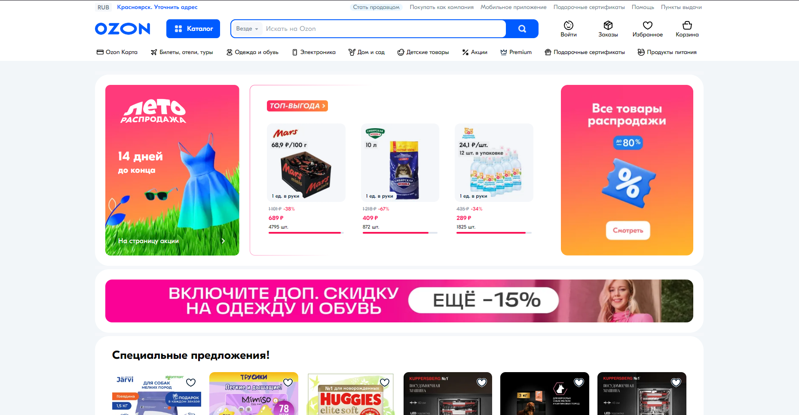
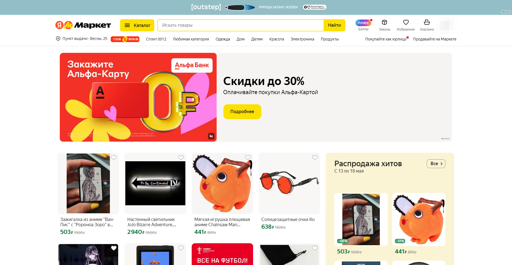

Приветствуем вас на разделе сайта Проект КА!0Б. Здесь вы получите необходимую информацию для получения прибыли в интернете, используя своё творчество, на поприще онлайн-магазинов!
О онлайн-магазинах
Продажа товара (физического продукта творчества в том числе) в интернете — это процесс продажи товаров через онлайн-платформы, включая веб-сайты электронной коммерции, социальные медиа, рынки и интернет-аукционы. Это дает возможность креативным предпринимателям продавать свои уникальные товары напрямую потребителям без привязки к традиционным магазинам.
Плюсы:
–Глобальная аудитория: Продажа товаров в интернете позволяет достичь аудитории по всему миру, что расширяет потенциальный рынок для продуктов и увеличивает шансы на успех.
–Низкие затраты: Запуск онлайн-магазина или использование платформ электронной коммерции может быть гораздо более экономически выгодным, чем аренда физического магазина и связанные с ним расходы.
–Доступность 24/7: Интернет-магазины доступны для покупателей круглосуточно, что означает, что продажи могут происходить даже во времена, когда обычные магазины закрыты.
–Персонализация: Онлайн-платформы позволяют предпринимателям персонализировать свой бренд и взаимодействовать с клиентами более непосредственно через контент, рекламу и сообщения.
–Управление запасами: Использование специализированных программного обеспечения для управления запасами позволяет легко отслеживать товары и предотвращать нехватку или избыток товаров на складе.
Минусы:
–Конкуренция: Интернет-рынок насыщен конкуренцией, что может затруднить выделение своего товара среди других аналогичных предложений.
–Доставка и логистика: Организация доставки товаров может быть сложной и требовать значительных усилий и ресурсов, особенно при международных заказах.
–Безопасность данных: С увеличением онлайн-покупок возрастает риск нарушения безопасности данных клиентов, что требует внимательного обращения и инвестиций в кибербезопасность.
–Необходимость маркетинга: Продажа в интернете требует активного маркетинга для привлечения внимания к продукту среди множества других предложений.
–Возврат товаров: Возможность возврата товаров и возврат средств является неотъемлемой частью интернет-торговли и может создавать дополнительные сложности и расходы для предпринимателя.
Лучшие сайты для начала работы в онлайн-магазинах.

Wildberries - это крупнейший онлайн-ритейлер в России, предлагающий широкий ассортимент одежды, электроники, книг и других товаров.
Плюсы:
-Большая клиентская база.
-Маркетинговые инструменты для продвижения товаров.
-Аналитические данные для оптимизации продаж.
Минусы:
-Высокая конкуренция среди продавцов.
-Комиссии и сборы за продажу и доставку товаров.
-Строгие требования к качеству и возврату товаров.

Ozon - один из ведущих онлайн-магазинов в России, предлагающий разнообразие товаров от бытовой техники до продуктов питания.
Плюсы:
-Разнообразные логистические опции.
-Поддержка продавцов через персональных менеджеров.
-Возможность использования Ozon как рекламной площадки.
Минусы:
-Комиссия за продажу может быть выше, чем на других платформах.
-Сложности с управлением запасами из-за большого объема заказов.
-Требования к упаковке и брендингу могут быть обременительными.

Яндекс.Маркет позволяет продавцам сравнивать цены и предлагать свои товары в рамках большой экосистемы Яндекса.
Плюсы:
-Доступ к широкой аудитории через экосистему Яндекса.
-Гибкие настройки рекламных кампаний.
-Интеграция с другими сервисами Яндекса.
Минусы:
-Зависимость от отзывов покупателей, которые могут влиять на рейтинг.
-Конкуренция с другими платформами на Яндекс.Маркет.
-Плата за клики может увеличивать затраты на маркетинг.